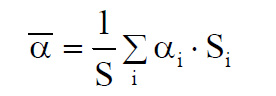

(1) Der mittlere Schallabsorptionsgrad α eines Raumes kann bei Kenntnis der Schallabsorptionsgrade α aller Raumbegrenzungsflächen (Wände, Decke, Boden) und weiterer Oberflächen (Einrichtungen, Trennwände, …) abgeschätzt werden. Dazu müssen die Schallabsorptionsgrade der vorhandenen Einzelflächen bekannt sein bzw. vorgegeben werden. Schallabsorptionsgrade α typischer Baustoffe und raumakustisch wirksamer Einbauten sind in der Tabelle 1 aufgeführt. Die Schallabsorptionsgrade α sind hier für die Oktavbänder von 250 Hz bis 2000 Hz als arithmetischer Mittelwert angegeben.
Tab. 1: Schallabsorptionsgrade α von Baumaterialien und raumakustisch wirksamen Einbauten für die Oktavbänder von 250 Hz bis 2000 Hz als arithmetischer Mittelwert (basierend auf Informationen des Industrieverbandes Büro und Arbeitswelt e. V. (IBA)/Akustikbüro Oldenburg)
| Lfd. Nr. | Absorbertyp | Schallabsorptionsgrade für Mittelwert 250 – 2000 Hz |
| 1 | Mauerziegelwand, unverputzt, Fugen ausgestrichen | 0,04 |
| 2 | Mauerwerk, Hohllochziegel, Löcher sichtbar, 6 cm vor Massivwand | 0,36 |
| 3 | Glattputz | 0,03 |
| 4 | Tapete auf Kalkzementputz | 0,05 |
| 5 | Spiegel, vor der Wand | 0,05 |
| 6 | Tür, Holz, lackiert | 0,06 |
| 7 | Stuckgips, unverputzter Beton | 0,04 |
| 8 | Marmor, Fliesen, Klinker | 0,02 |
| 9 | Fenster (Isolierverglasung) | 0,10 |
| 10 | Glastrennwand, 10 mm dick, 2-Scheiben-Verbundglas | Hersteller anfragen |
| 11 | Parkettfußboden, aufgeklebt | 0,05 |
| 12 | Parkettfußboden, auf Blindboden | 0,10 |
| 13 | Parkettfußboden, hohlliegend | 0,07 |
| 14 | Teppichboden, bis 6 mm Florhöhe | 0,15 |
| 15 | Teppichboden, 7 mm bis 10 mm Florhöhe | 0,26 |
| 16 | PVC-Fußbodenbelag (2,5 mm) auf Betonboden | 0,03 |
| 17 | Linoleum auf Beton | 0,03 |
| 18 | Kork | 0,03 |
| 19 | Gipskartonplatten 9,5 mm, 60 mm Wandabstand, Hohlraum kassettiert | 0,08 |
| 20 | furnierte Holz- oder Spanplatte dicht vor festem Untergrund | 0,05 |
| 21 | 4 mm Hartfaserplatte, kassettiert ohne Dämmstoff, Wandabstand 60 mm | 0,11 |
| 22 | 4 mm Hartfaserplatte, kassettiert mit 40 mm Mineralwollplatte, Wandabstand 60 mm | 0,13 |
| 23 | 4 mm Hartfaserplatte, kassettiert ohne Dämmstoff, Wandabstand 120 mm | 0,08 |
| 24 | Gipskartonplatte, 9,5 mm, 25 mm Wandabstand | 0,12 |
| 25 | Bücherregal in Bibliotheken | 0,35 |
| 26 | Vollziegel Mauerwerk | 0,12 |
| 27 | Lochsteine – vorsichtige Annahme | 0,41 |
| 28 | 3,5 mm Hartfaserplatte, 40 mm Mineralwolle, 30 mm Holzleisten 750 mm x 500 mm | 0,15 |
| 29 | 4 mm Sperrholzplatte, 40 mm Mineralwolle, 120 mm Wandabstand | 0,16 |
| 30 | Nadelfilz 7 mm | 0,18 |
| 31 | 5 mm Teppich mit 5 mm Filzunterlage | 0,57 |
| 32 | PVC-Belag, Linoleum | 0,04 |
| 33 | Holzfußboden auf Leisten | 0,09 |
| 34 | Spanndecke mikroperforiert, 100 mm Abhängehöhe, kein Vlies | 0,58 |
| 35 | Spanndecke mikroperforiert, 100 mm Abhängehöhe, 40 mm Akustikvlies | 0,84 |
| 36 | Rasterdecke 8/18 Rundloch 15,5 %, 200 mm Abhängehöhe, Akustikvlies, ohne Mineralwolle | 0,61 |
| 37 | Rasterdecke 8/18 Rundloch 15,5 %, 200 mm Abhängehöhe, Akustikvlies, 20 mm Mineralwolle | 0,65 |
| 38 | Rasterdecke 12/25 Quadratloch 7,8 %, 200 mm Abhängehöhe, Akustikvlies, 20 mm Mineralwolle | 0,44 |
| 39 | Rasterdecke 12/25 Quadratloch 7,8 %, 65 mm Abhängehöhe, Akustikvlies, 20 mm Mineralwolle | 0,45 |
| 40 | Holzwolle-Leichtbauplatten 35 mm, direkt auf Wand | 0,56 |
| 41 | Holzwolle-Leichtbauplatten 25 mm, Hohlraum leer, Wandabstand 50 mm | 0,53 |
| 42 | 30 mm Melaminharz-Schaumstoff, Rohdichte 8 kg/m3 bis 10 kg/m3 | 0,68 |
| 43 | 50 mm Melaminharz-Schaumstoff, Rohdichte 8 kg/m3 bis 10 kg/m3 | 0,84 |
| 44 | 40 mm Mineralwollmatte (20 kg/m3), ohne Lochblechabdeckung | 0,70 |
| 45 | 40 mm Mineralwollmatte (20 kg/m3), mit Lochblechabdeckung (18 %) | 0,70 |
| 46 | gelochter Gipskarton 9,5 mm, 8/18, 15 %, mit Faservlies hinterlegt, Wandabstand 100 mm | 0,48 |
| 47 | Gipskarton-Schlitzplatte, 8,8 % mit Faservlies, Wandabstand 100 mm | 0,40 |
| 48 | gelochte Langfeld-Metallkassette, 20 %, 3 mm Loch, Akustikfilz, 300 mm Abhängehöhe | 0,69 |
| 49 | senkrecht stehende Lamellen, gelochtes Stahlblech, Mineralfaserplatte, Glasfaservlies | 0,62 |
| 50 | 20 mm grobkörniger Spritzputz auf Stegzementdiele | 0,53 |
| 51 | Spritzputz auf 12,5 mm Gipskartonplatte, Spritzstruktur | 0,41 |
| 52 | 20 mm Mineralwollplatte mit 200 mm Abhängehöhe, Schallabsorberklasse A | 0,90 – 1,00 |
| 53 | 20 mm Mineralwollplatte mit 200 mm Abhängehöhe, Schallabsorberklasse C | 0,60 – 0,75 |
| 54 | 15 mm Mineralwollplatte mit 200 mm Abhängehöhe, Schallabsorberklasse A | 0,90 – 1,00 |
(2) Der mittlere Schallabsorptionsgrad α eines Raumes lässt sich nach der Formel

berechnen mit
S = Summe aller Raumbegrenzungsflächen in m2
αi = Schallabsorptionsgrade der Einzelflächen
Si = Einzelflächen in m2
(3) Näherungsweise*) kann für bestehende Räume der mittlere Schallabsorptionsgrad α nach der Tabelle 2 abgeschätzt werden.
Tab. 2: Beispiele des mittleren Schallabsorptionsgrades α verschiedener Räume*)| α | Beschreibung des Raums |
| 0,1 | Raum ohne schallschluckende Einbauten mit wenigen Einrichtungen (Maschinen, Möbel, Regale, …) |
| 0,15 | Raum ohne schallschluckende Einbauten mit vielen Einrichtungen |
| 0,2 | Raum ohne schallschluckende Einbauten mit vielen Einrichtungen und besonders leichten Begrenzungsflächen oder zahlreichen Öffnungen oder hoher Raum (h ≥ 10 m) mit mäßiger Akustikdecke (α ≥ 0,5) |
| 0,25 | Raum (h = 3 m bis 5 m) mit mäßiger Akustikdecke ( α ≥ 0,5) oder hoher Raum (h ≥ 10 m) mit guter Akustikdecke (α ≥ 0,9) |
| 0,3 | Raum wie für α = 0,25 beschrieben, jedoch mit zusätzlicher absorbierender Wand- oder Stellwandfläche ≥ ½ Deckenfläche |
| 0,4 | Niedriger Raum (h = 3 m bis 5 m) mit guter Akustikdecke (α ≥ 0,9) |
*) Quelle: TRLV Lärm, Teil 3: Lärmschutzmaßnahmen, Anhang 5: Nachhallzeit und mittlerer Schallabsorptionsgrad. Der mittlere Schallabsorptionsgrad α gilt hier in den Oktavbändern mit den Mittenfrequenzen von 500 Hz bis 4000 Hz. Er ist somit leicht erhöht gegenüber den mit Tabelle 1 ermittelten Werten.
(1) Die Nachhallzeit T ist abhängig vom Raumvolumen und vom Schallabsorptionsvermögen des Raumes. So ergibt sich die Nachhallzeit T zu
T ≈ 0,163 • V/(α • S) in s
mit
T = Nachhallzeit in s
V = Raumvolumen in m3
S = Summe aller Raumbegrenzungsflächen in m2
α = mittlerer Schallabsorptionsgrad
Hinweis:
Die Anwendung der Formel ist beschränkt auf Räume, deren längste Seite maximal das Fünffache der kürzesten Seite beträgt. Bei anderen Räumen können die Nachhallzeiten länger als rechnerisch ermittelt sein.
(2) Die in Abschnitt 5.2.1 Absatz 2 geforderten Nachhallzeiten T für Büroräume und Callcenter werden in Abhängigkeit von den Raumgrundflächen und zugehörigen Mindestraumhöhen gemäß ASR A1.2 "Raumabmessungen und Bewegungsflächen" eingehalten, wenn die in Tabelle 3 aufgeführten mittleren Schallabsorptionsgrade α ermittelt wurden.
Tab. 3: Erforderliche mittlere Schallabsorptionsgrade α, um Nachhallzeiten T für verschiedene Büroraumtypen und Raumgrößen zu erfüllen
| Grundfläche | 1–2 Personenbüro | Mehrpersonen-/Großraumbüro | Callcenter |
| bis 20 m2 | α = 0,15 | – | α = 0,2 |
| 20 m2 bis 50 m2 | – | α = 0,2 | α = 0,25 |
| 50 m2 bis 200 m2 | – | α = 0,3 | α = 0,35 |
| 200 m2 bis 1000 m2 | – | α = 0,35 | α = 0,4 |
(3) Die in Abschnitt 5.2.2 geforderte Nachhallzeit T für einen besetzten Klassenraum von 210 m3 wird eingehalten, wenn für den unbesetzten Raum ein mittlerer Schallabsorptionsgrad α von 0,25 ermittelt wurde.